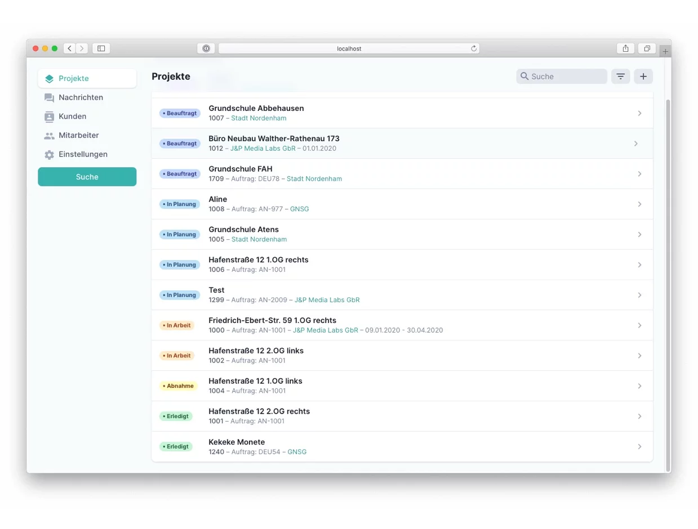
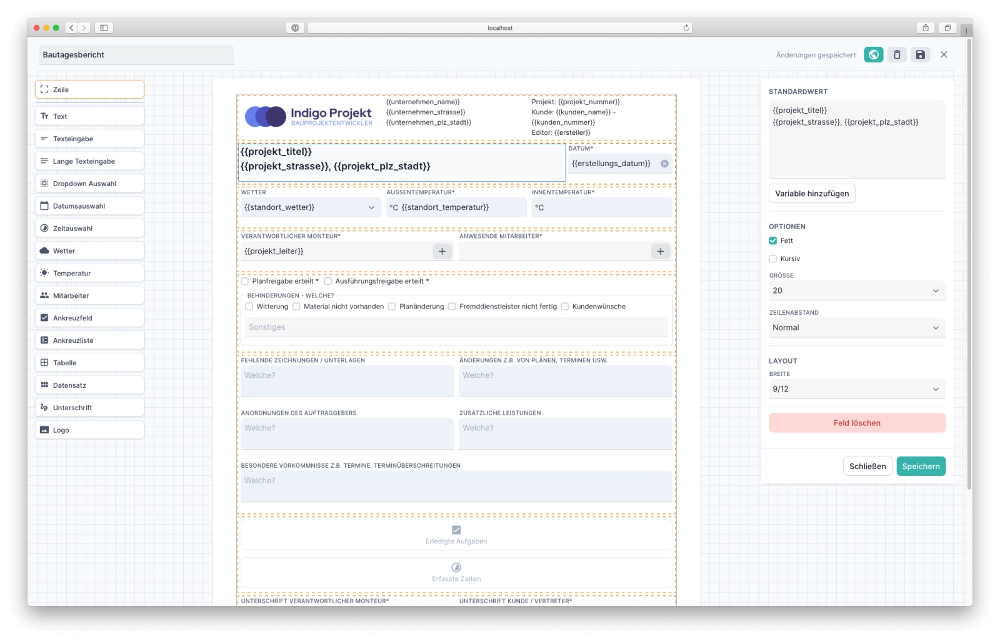

Empowering Craftsmanship with Digital Solutions
In my role at Gridventures GmbH, I was instrumental in developing the Rechain app, designed to digitize the operational workflow for crafts and trades businesses. My contribution primarily focused on the backend development, leveraging Node.js, MongoDB, Websockets, and Redis to ensure a seamless, real-time data synchronization and robust database management. This backend architecture was critical in supporting the app's capability to streamline documentation, scheduling, and communication processes for craftsmen, thereby enhancing efficiency and reducing manual errors.
Through this project, I demonstrated my expertise in creating scalable and efficient backend solutions that cater to the specific needs of the crafts and trades sector. By integrating advanced technologies, I helped facilitate a digital transformation, enabling businesses to operate more effectively in a competitive landscape. This experience has been a testament to my ability to innovate and execute complex software development projects that address real-world challenges.
